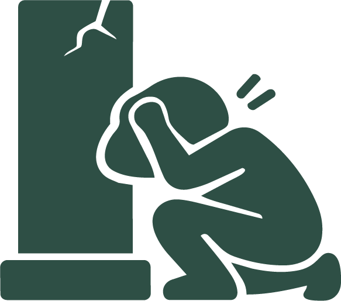
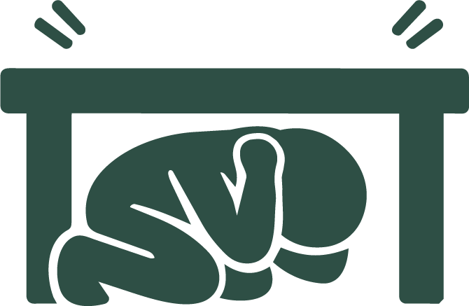

Casa o
edificio
Ubícate junto a columnas (solo si la construcción es sismorresistente) o bajo muebles macizos y resistentes, lejos de ventanas y objetos que puedan caer, volcarse o romperse. Quédate ahí hasta que termine el movimiento.
UNGRD e IDIGER

